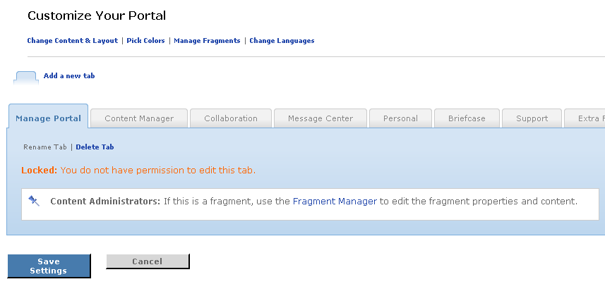

Certain tabs called fragments are created and managed by portal administrators. These tabs are not modifiable by an end user during the customization process. These tabs will be identified as locked by the system when selected in the Change Content and Layout view.
